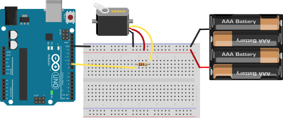

Сонячний трекер на сервоприводі SG90 та двох фоторезисторах
Справжня зелена енергетика в мініатюрі. Створіть систему стеження за найяскравішим джерелом світла: аналізуйте різницю освітленості між лівим та правим фоторезисторами (LDR) та повертайте віртуальну сонячну панель за допомогою мікросервопривода SG90.
☀️ Чому сонячні батареї з трекером генерують на 40% більше енергії?
Стаціонарна сонячна панель ловить прямі промені лише кілька годин опівдні. Вранці та ввечері промені падають під косим кутом, і більша частина фотонів відбивається. Наш трекер постійно вимірює освітленість ліворуч (A0) і праворуч (A1). Якщо світло падає збоку — виникає різниця напруги, і мікроконтролер плавно довертає кут вала, поки обидва сенсори не отримають однаковий потік світла!
Схеми підключення: SG90 серво та два подільники напруги LDR

Керуючий оранжевий провід сервопривода підключено до PWM-піна D9, коричневий — до GND, червоний — до 5V.
Керуйте рухом сонця та спостерігайте за сервоприводом
Перетягуйте положення віртуального світила: сервопривід автоматично відстежує вектор найяскравішого світла
Чекліст деталей для збірки сонячного трекера
Сервопривід SG90 (9g)
1 шт. • Кут 0..180°Редукторний привід із вбудованим потенціометром зворотного зв\'язку.
Фоторезистори LDR 5мм
2 шт. • GL5528Опір змінюється від 1 МОм у повній темряві до 5–10 кОм на яскравому сонці.
Резистори 10 кОм
2 шт. • Коричневий-Чорний-ОранжевийНижнє опорне плече подільника напруги для точного зчитування через АЦП.
Конденсатор 100-470 мкФ
1 шт. • ЕлектролітичнийЗгладжує пусковий струм двигуна сервопривода (запобігає перезавантаженню UNO).
Arduino UNO R3
1 шт. • Бібліотека Servo.hАпаратний 16-бітний таймер Timer1 генерує керуючі імпульси частотою 50 Гц.
Чому сервопривід не керується функцією analogWrite()?
Це найчастіше непорозуміння початківців! Функція analogWrite() має частоту 490 Гц. Якщо подати такий сигнал на сервопривід, його внутрішня схема керування збожеволіє.
Сервопривід вимагає спеціального імпульсного сигналу з частотою рівно 50 Гц (період 20 мілісекунд):
- Тривалість імпульсу 1.0 мс (1000 мкс): крайній кут 0 градусів.
- Тривалість імпульсу 1.5 мс (1500 мкс): центральне положення 90 градусів.
- Тривалість імпульсу 2.0 мс (2000 мкс): крайній кут 180 градусів.
Бібліотека <Servo.h> автоматично налаштовує 16-бітний таймер Arduino для формування цих високоточних імпульсів!
Скетч трекера з пропорційним регулятором та зоною нечутливості
// SimpleArduino — Проєкт #07: Сонячний трекер на сервоприводі SG90 та двох фоторезисторах
// Пропорційне стеження за світлом із захистом від тремтіння (Deadband)
#include <Servo.h>
Servo trackerServo;
const int LDR_LEFT_PIN = A0; // Лівий фоторезистор
const int LDR_RIGHT_PIN = A1; // Правий фоторезистор
const int SERVO_PIN = 9; // Пін керування сервоприводом
int currentAngle = 90; // Початковий кут сервопривода (90 градусів — центр)
const int TOLERANCE = 15; // Зона нечутливості (Deadband) для усунення тремтіння
const int MIN_ANGLE = 10; // Механічний захист: мінімальний кут
const int MAX_ANGLE = 170; // Механічний захист: максимальний кут
void setup() {
Serial.begin(9600);
// Підключаємо сервопривід на пін 9
trackerServo.attach(SERVO_PIN);
trackerServo.write(currentAngle);
delay(500);
}
void loop() {
// 1. Зчитуємо показники освітленості з обох датчиків (0..1023)
int leftVal = analogRead(LDR_LEFT_PIN);
int rightVal = analogRead(LDR_RIGHT_PIN);
// 2. Обчислюємо різницю освітленості
int difference = leftVal - rightVal;
Serial.print("L: "); Serial.print(leftVal);
Serial.print(" | R: "); Serial.print(rightVal);
Serial.print(" | Diff: "); Serial.print(difference);
Serial.print(" | Angle: "); Serial.println(currentAngle);
// 3. Якщо різниця перевищує поріг чутливості — повертаємо сервопривід
if (abs(difference) > TOLERANCE) {
if (difference > 0) {
// Ліворуч світліше — довертаємо ліворуч
currentAngle -= 1;
} else {
// Праворуч світліше — довертаємо праворуч
currentAngle += 1;
}
// Обмежуємо діапазон, щоб сервопривід не впирався в механічний обмежувач
currentAngle = constrain(currentAngle, MIN_ANGLE, MAX_ANGLE);
trackerServo.write(currentAngle);
}
delay(40); // Швидкість реакції трекера (40 мс для плавності ходу)
}Матриця типових несправностей
Сервопривід смикається (тремтить) і сильно гріється
Занадто мала зона нечутливості (TOLERANCE)! Оскільки опір фоторезисторів має невеликі шуми, при TOLERANCE = 1 мотор буде постійно коливатися туди-сюди. Збільште константу до 15–20.
Плата Arduino раптово перезавантажується при старті мотора
Brownout Reset! Пусковий струм електродвигуна SG90 сягає 500 мА. Внутрішній лінійний стабілізатор 5V просідає нижче 4.3В, і процесор скидається. Підключіть електролітичний конденсатор 100–470 мкФ між лініями 5V та GND поруч із роз'ємом сервопривода!
Сервопривід повертається у зворотний від сонця бік
Ви переплутали місцями підключення лівого та правого датчиків LDR (A0 та A1), або переплутали напрямок інкременту кута в коді (+1 замість -1).
Мотор гуде в крайніх точках і не може зупинитися
Ви спробували задати кут 0° або 180°, які впираються в пластиковий стопор редуктора SG90. Обов'язково обмежуйте кут викликом constrain(angle, 10, 170).
Перевірте себе: чому сервопривід тримає заданий кут навіть якщо навантаження тисне на важіль?
Оберіть єдину правильну відповідь про внутрішній устрій сервомеханізму: